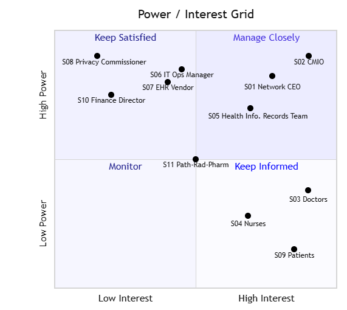

Risk, Stakeholders & Communication
What could stop the project, who can make or break it, and how do we keep them engaged?
Risk register
| ID | Risk | L | I | Score | Rating | Owner | Response | Action | WBS | Status |
|---|---|---|---|---|---|---|---|---|---|---|
| R01 | Legacy data is incomplete or duplicated, so migrated records are wrong and patient safety is at risk | 4 | 5 | 20 | High | Data Migration Specialist | Mitigate | Cleansing rules, 2 test migrations, clinician sample audit (≥99.5% accuracy) | 4.1, 4.2 | Open |
| R02 | Clinicians resist the new workflow, so adoption is low after go-live | 4 | 4 | 16 | High | Clinical Lead | Mitigate | Clinician super-users, involve clinicians in UAT, targeted training | 6.1, 6.2 | Open |
| R03 | EHR configuration takes longer than planned, delaying go-live (critical path) | 3 | 5 | 15 | High | Project Manager | Mitigate | Fixed-scope sprints, weekly progress review, vendor penalty clauses | 3.2 | Triggered – see ISSUE-01 |
| R04 | Integration with pathology/radiology/pharmacy fails, so results don't reach clinicians | 3 | 5 | 15 | High | Integration Developer | Mitigate | Early interface testing, HL7/FHIR standards, vendor support | 3.3 | Open |
| R06 | Cutover downtime interrupts clinical care | 3 | 5 | 15 | High | Project Manager | Mitigate | Overnight cutover, paper downtime procedures, rollback plan | 7.1, 7.3 | Open |
| R08 | Staff can't be released for training because of rostering | 4 | 3 | 12 | Medium | Trainer | Mitigate | Short modules, training across shifts, backfill budget | 6.2 | Open |
| R10 | Cost overrun from change requests and scope creep | 3 | 4 | 12 | Medium | Project Sponsor | Mitigate | Change Control Board, 10% contingency reserve | All | Open |
| R05 | Privacy breach or unauthorised access to patient records | 2 | 5 | 10 | Medium | Security & Privacy Officer | Avoid | Role-based access, audit logs, encryption, privacy impact assessment | 3.4 | Open |
| R07 | Vendor tender takes longer due to procurement rules | 3 | 3 | 9 | Medium | Business Analyst | Mitigate | Early market scan, pre-approved evaluation criteria | 2.3 | Closed |
| R11 | Key vendor consultant leaves mid-project | 2 | 4 | 8 | Medium | Project Manager | Transfer | Contract requires vendor replacement within 10 days | 3.2, 3.3 | Open |
| R12 | Legacy vendor support ends before decommissioning is complete | 2 | 4 | 8 | Medium | IT Operations Manager | Mitigate | Negotiate short support extension as fallback | 8.2 | Open |
| R09 | Hardware or network delivery delayed at smaller sites | 2 | 3 | 6 | Low | Network/Infrastructure Engineer | Accept | Monitor; 35 days float on 3.1; order early | 3.1 | Closed |
Scoring: likelihood 1 (rare) to 5 (almost certain) × impact 1 (negligible) to 5 (severe: patient safety, go-live, or >10% of budget). High ≥ 15, Medium 8–14, Low ≤ 7.
5×5 heat map
What this shows
Five High risks: R01 data quality (20), R02 clinician resistance (16), R03 configuration delay (15), R04 integration failure (15), R06 cutover downtime (15).
Why R01 scores 20
Duplication is likely (4) because four systems hold overlapping records. The impact is severe (5) because wrong records put patient safety at risk. Response: mitigate with two test migrations and a clinician-audited 99.5% accuracy target.
How it connects
Each risk links to a WBS task and an owner. R03 was triggered on 11 Sep and became ISSUE-01 (Tracking).
Stakeholders

Add screenshot: images/power-interest.pngWhat this shows
The sponsor and CMIO are high power, high interest, so we manage them closely. Doctors and nurses have high interest; they are currently resistant or neutral, and we need them supportive.
How it connects
Nurses are managed closely despite medium power because they control staff release for training (R08), and their adoption drives objective 3. Clinician resistance (R02) is managed through clinician champions and UAT involvement.
Decision / implication
Engagement actions for each quadrant are set in the communication plan below.
| ID | Stakeholder | Role / interest | Power | Interest | Current | Desired | Strategy | Actions |
|---|---|---|---|---|---|---|---|---|
| S01 | Network Chief Executive | Project sponsor | High | High | Supportive | Leading | Manage closely | Monthly steering committee; approves budget and go-live |
| S02 | Chief Medical Information Officer | Business owner / clinical sponsor | High | High | Supportive | Leading | Manage closely | Chairs clinical design authority; signs off UAT |
| S03 | Doctors (all sites) | End users | Medium | High | Resistant | Supportive | Keep informed → involve | Clinician champions, UAT involvement, demos |
| S04 | Nurses & Nurse Unit Managers | End users; release staff for training | Medium | High | Neutral | Supportive | Manage closely | Roster-friendly training, super-users on each ward |
| S05 | Health Information / Records team | Data owners | Medium | High | Neutral | Supportive | Keep informed | Data migration working group |
| S06 | IT Operations Manager | Runs infrastructure after handover | High | Medium | Supportive | Supportive | Keep satisfied | Technical working group; BAU handover plan |
| S07 | EHR Vendor | Supplier | High | Medium | Supportive | Supportive | Keep satisfied | Contract meetings, weekly delivery review |
| S08 | Privacy Commissioner / State Health Dept | Regulator | High | Low | Unaware | Neutral | Keep satisfied | Privacy impact assessment shared; compliance reports |
| S09 | Patients & community | Affected by record accuracy and downtime | Low | High | Unaware | Neutral | Keep informed | Hospital newsletter, signage during cutover |
| S10 | Finance Director | Budget control | High | Low | Neutral | Supportive | Keep satisfied | Monthly cost report (CPI, contingency) |
| S11 | Pathology, radiology & pharmacy departments | Integration partners | Medium | Medium | Neutral | Supportive | Keep informed | Interface testing sessions |
Communication plan
| Communication | Audience | Content | Method | Frequency | Owner |
|---|---|---|---|---|---|
| Steering committee report | Sponsor, CMIO, Finance Director | Status, RAG, SPI/CPI, top risks, decisions needed | Meeting + written report | Monthly | Project Manager |
| Clinical design authority | CMIO, clinician champions | Configuration decisions, template sign-off | Workshop | Fortnightly | Clinical Lead |
| Project team stand-up | Project team, vendor | Progress, blockers, Trello board review | Video call | Daily (15 min) | Project Manager |
| Change Control Board | Sponsor, CMIO, IT Ops Manager | Change requests and impact | Meeting | Fortnightly / as needed | Project Manager |
| Staff newsletter & intranet | All staff | What's changing, training dates, go-live dates | Email / intranet | Fortnightly | Trainer |
| Ward huddles | Nurses, doctors | Training reminders, go-live readiness, quick tips | Face to face | Weekly before go-live | Super-users |
| Vendor delivery review | EHR Vendor | Deliverables, defects, contract milestones | Meeting | Weekly | Project Manager |
| Regulator compliance update | Privacy Commissioner / State Health Dept | Privacy impact assessment, security controls | Formal letter / report | At milestones M2 and M3 | Security & Privacy Officer |
| Patient notices | Patients & community | Downtime periods, what to expect | Signage, website | 2 weeks before each site go-live | Communications Officer |